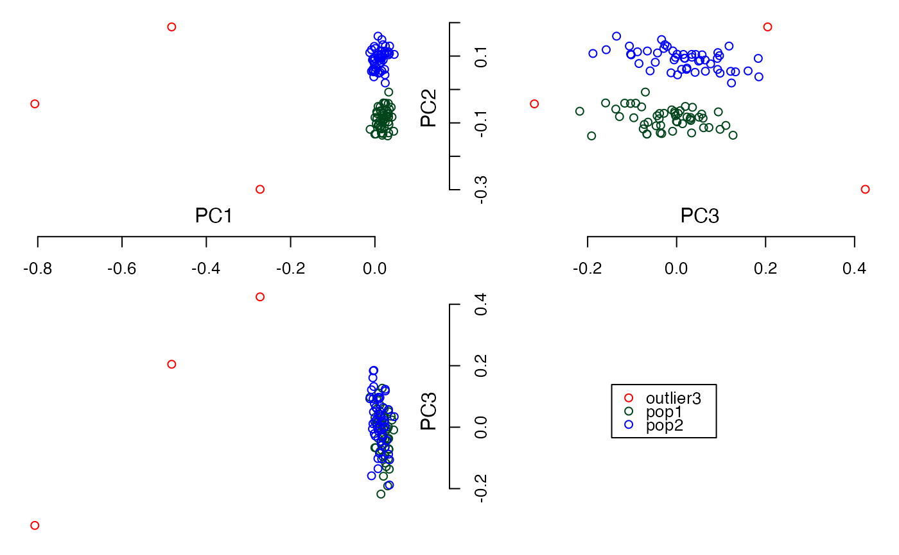
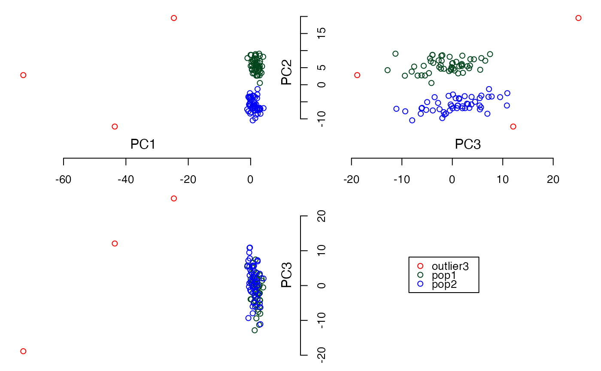

R/principal.component.R
cal.pc.linear.RdAvailable for two types of data; numeric data and Single-nucleotide polymorphism (SNP) dataset in additive coding (0, 1, and 2).
cal.pc.linear(X, PCscore = TRUE, no.pc = NA, data.type = "linear", XXT = TRUE)A data matrix which rows represent samples and columns represent features.
To specify whether scaled PCs will be calculated or not. If FALSE, eigenvectors are returned instead. Default = TRUE.
A number of PCs to be calculated. If no.pc is set, PCs are patially calculated. Otherwise all PCs are obtained after calculation. Default = NA.
To specify a type of data matrix X. It can be set to "linear" and "snp". Default = "linear".
To specify how pricipal components (PCs) are calculated. If TRUE, PCs are calculated from X.t(X), otherwise X is used directly. XXT is useful option especially an input matrix X contains many columns. Enabling this option, it helps to reduce computation complexity. Regardless the option XXT is enable or not, optained PCs are the same. Default = TRUE.
The returned value is a list with 2 objects, $PC,
$evalue:
$PC is a PC matrix which rows represent samples and columns
represent PCs.
$evalue is a vector of eigen values.
#Load simulated dataset
data(example_SNP)
#Using default parameters
PCs <- cal.pc.linear(simsnp$snp)
#> Warning: all singular values are requested, svd() is used instead
summary(PCs)
#> Length Class Mode
#> PC 10609 -none- numeric
#> evalue 103 -none- numeric
#Preview $PC
print(PCs$PC[1:5,1:3])
#> [,1] [,2] [,3]
#> [1,] 2.426088 -5.146121 -2.58662187
#> [2,] 2.890399 -6.345486 0.06127739
#> [3,] 2.424596 -5.313868 -7.57145357
#> [4,] 0.301311 -6.707022 0.78266473
#> [5,] 3.495531 -3.485107 2.09719824
#Preview $evalue
print(PCs$evalue[1:3])
#> [1] 8163.983 4281.889 3478.629
plot3views(PCs$PC[,1:3], sample_labels)
#Calculate PCs without PC scores
PCs <- cal.pc.linear(simsnp$snp, PCscore = FALSE)
#> Warning: all singular values are requested, svd() is used instead
summary(PCs)
#> Length Class Mode
#> PC 10609 -none- numeric
#> evalue 103 -none- numeric
#Preview $PC
print(PCs$PC[1:5,1:3])
#> [,1] [,2] [,3]
#> [1,] 0.026850697 -0.07864341 -0.043855986
#> [2,] 0.031989448 -0.09697220 0.001038954
#> [3,] 0.026834175 -0.08120693 -0.128373446
#> [4,] 0.003334756 -0.10249721 0.013270024
#> [5,] 0.038686737 -0.05325966 0.035557844
#Preview $evalue
print(PCs$evalue[1:3])
#> [1] 8163.983 4281.889 3478.629
plot3views(PCs$PC[,1:3], sample_labels)

#Calculate the top 3 PCs
PCs <- cal.pc.linear(simsnp$snp, no.pc = 3)
summary(PCs)
#> Length Class Mode
#> PC 309 -none- numeric
#> evalue 3 -none- numeric
#Preview $PC
print(PCs$PC[1:5,1:3])
#> [,1] [,2] [,3]
#> [1,] 2.426088 5.146121 -2.58662187
#> [2,] 2.890399 6.345486 0.06127739
#> [3,] 2.424596 5.313868 -7.57145357
#> [4,] 0.301311 6.707022 0.78266473
#> [5,] 3.495531 3.485107 2.09719824
#Preview $evalue
print(PCs$evalue[1:3])
#> [1] 8163.983 4281.889 3478.629
plot3views(PCs$PC[,1:3], sample_labels)
